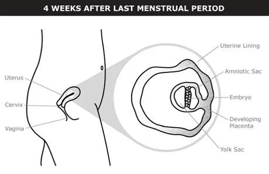

Pregnancy is divided into 3 trimesters. Each trimester is a little longer than 13 weeks. The first month marks the beginning of the first trimester.
Pregnancy timing is measured using “gestational age.” Gestational age starts on the first day of your last menstrual period (LMP).
Gestational age can be confusing. Most people think of pregnancy as lasting 9 months. And it’s true that you’re pregnant for about 9 months. But because pregnancy is measured from the first day of your last menstrual period — about 3-4 weeks before you’re actually pregnant — a full-term pregnancy usually totals about 40 weeks from LMP — roughly 10 months.
Many people don’t remember exactly when they started their last menstrual period — that’s OK. The surest way to find out gestational age early in pregnancy is with an ultrasound.
These are the first 2 weeks of your menstrual cycle. You have your period. About 2 weeks later, the egg that’s most mature is released from your ovary — this is called ovulation. Ovulation may happen earlier or later, depending on the length of your menstrual cycle. The average menstrual cycle is 28 days.
After it’s released, your egg travels down your fallopian tube toward your uterus. If the egg meets up with a sperm, they combine. This is called fertilization. Fertilization is most likely to occur when you have unprotected vaginal sex during the 6 days leading up to — and including the day of — ovulation.
The fertilized egg moves down your fallopian tube and divides into more and more cells. It reaches your uterus about 3–4 days after fertilization. The dividing cells then form a ball that floats around in the uterus for about 2–3 days.
Pregnancy begins when the ball of cells attaches to the lining of your uterus. This is called implantation. It usually starts about 6 days after fertilization and takes about 3–4 days to be complete.
Pregnancy doesn’t always happen, even if an egg is fertilized by a sperm. Up to half of all fertilized eggs pass out of your body when you get your period, before implantation is complete.
For a lot of people, the first sign of pregnancy is a missed period. Most pregnancy tests will be positive by the time you’ve missed your period. Other early pregnancy symptoms include feeling tired, feeling bloated, peeing more than usual, mood swings, nausea, and tender or swollen breasts. Not everyone has all of these symptoms, but it’s common to have at least 1 of them.
Know More